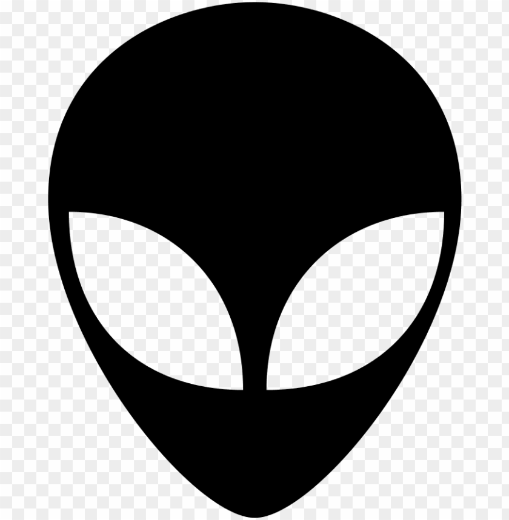

<nav>
    <mat-toolbar color="primary">
        
        <h2>Angular</h2>
        <ul class="navigation-list">
            <a mat-button routerLink="/" routerLinkActive="active">Home</a>
            <a mat-button routerLink="/about" routerLinkActive="active">About</a>
            <a mat-button routerLink="/crud" routerLinkActive="active">Crud</a>
            <a mat-button routerLink="/dashboard" routerLinkActive="active">Dashboard</a>
            <a mat-button routerLink="/gallery" routerLinkActive="active">Gallery</a>
            <a mat-button routerLink="/login" routerLinkActive="active"><mat-icon>login</mat-icon></a>
            <a mat-button routerLink="/profile" routerLinkActive="active"><mat-icon>person</mat-icon></a>
        </ul>
    </mat-toolbar>
</nav>
